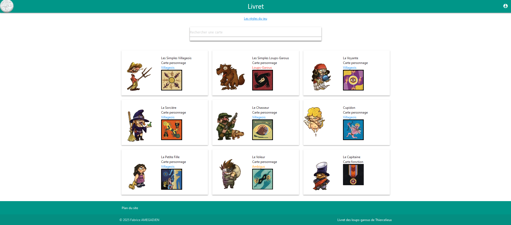
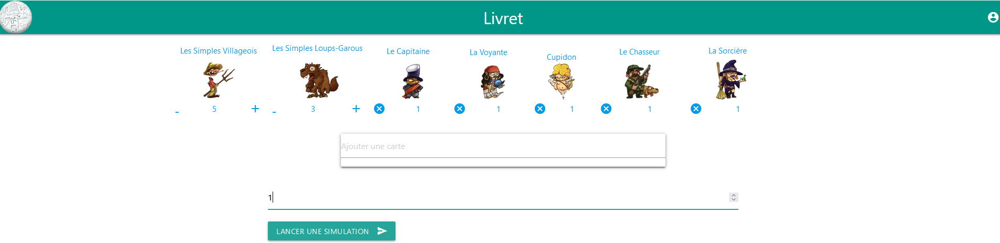
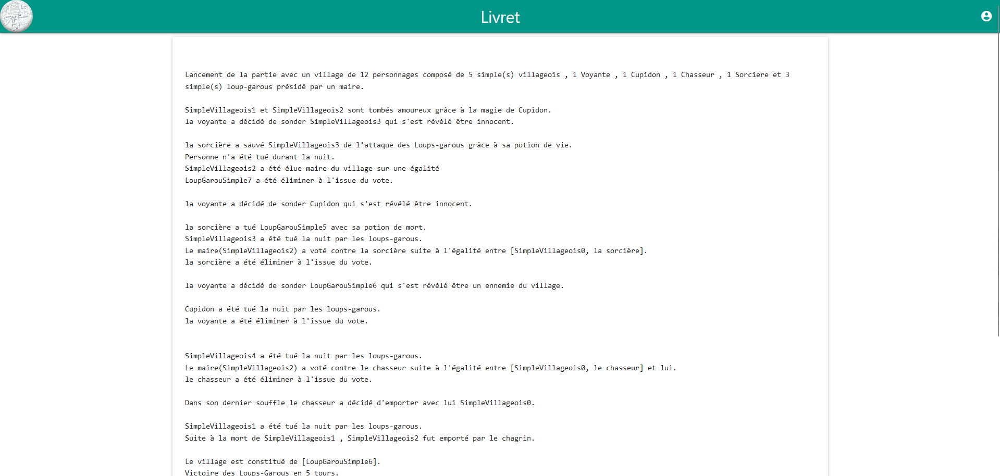
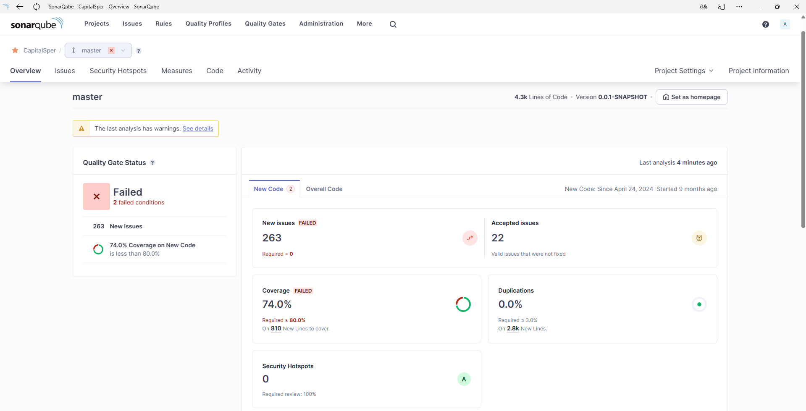

-
Livret Numérique pour le jeu de société « Les loups-garous de Thiercelieux »
Voici le menu d'un livret numérique pour le jeu de société « Les loups-garous de Thiercelieux » référençant les différents personnages ainsi que les règles du jeu accessible. Son but est permettre à tout les joueurs de pouvoir consulter les règles lors d'une partie de loups-garous. C'est un site web que j'ai développé en Angular et déployé sur Firebase, sur lequel il est connecté à une base noSql.

La liste des personnages est modulables afin d'afficher les personnages en fonction de la composition de la partie

Il ait aussi connecté à ce projet ci-dessous en tant que back end pour la page Capital-Sper du site. Ce qui lui permet de le requeter afin d'afficher des simulation de parties


-
Loups-garous
J'ai développé en Java avec de la programmation orientée objet, un programme qui simule des parties de Loups-Garous. Après avoir sélectionné les options d'affichage le nombre de simples villageois, de simples loups-garous et les villageois spéciaux que l'on veut ajouter, on peut lançer la partie

Ces parties me permettent d'analyser l'impact des personnages et ainsi estimer leurs forces afin d'améliorer l'équilibre d'une partie de Loups-Garous
Afin d'améliorer la faisabilité et être sure de mes résultats j'ai intégré SonarQube afin d'améliorer mes test
